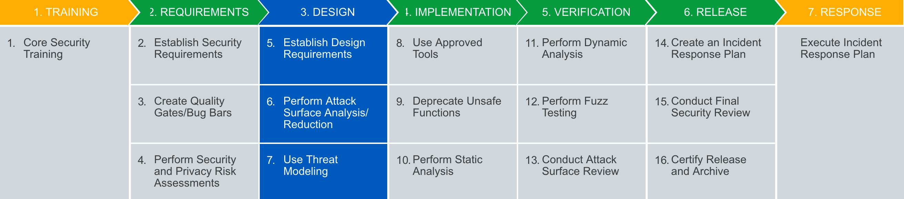
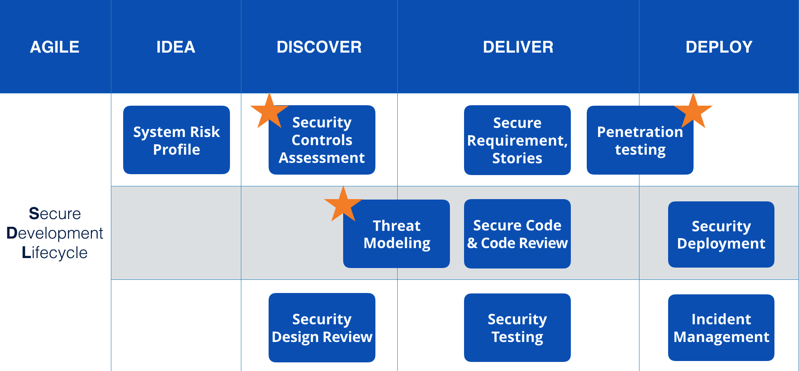
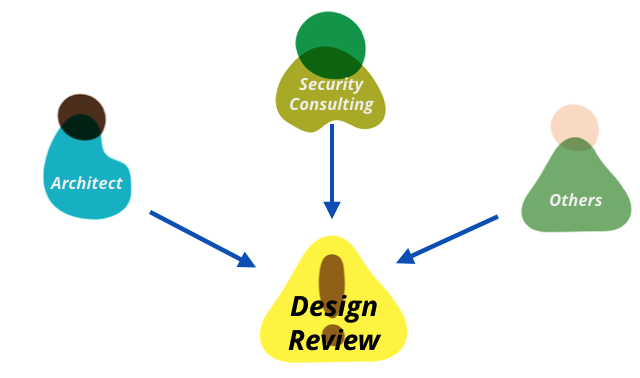
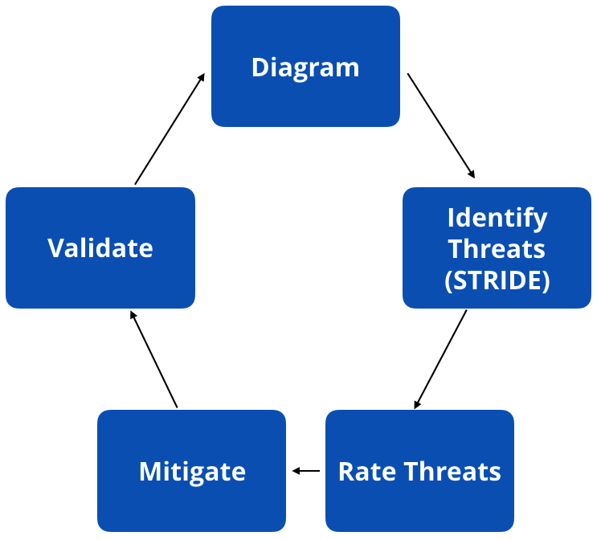
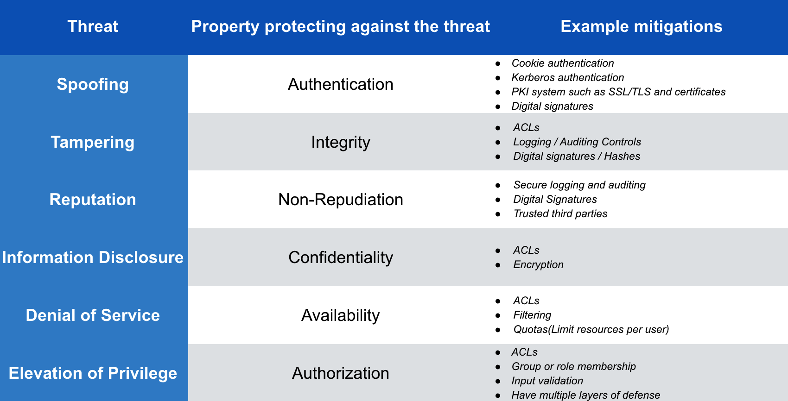
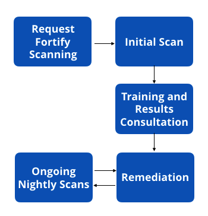
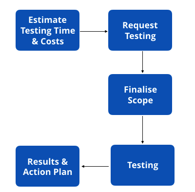

最近一直在某金融保险项目上工作，这个项目的开发、交付到维护阶段团队都有过不少关于安全的实践，于是便想总结一下。
项目上使用了Microsoft Secure Development Lifecycle (以下简称SDL)这一套完整安全体系来保障项目的安全。在使用时将整个过程分为四个阶段，每个阶段有着不同的实践来保证安全。

System Risk Profile
定义
Evaluate your project using the system risk profile to identify its critically and determine which steps of the SDL need to be performed.
概括来说就是通过这项实践来评定系统的安全等级，从而分析出哪些SDL的活动是必须做的。
举个例子，如果系统在Accessibility这一项评定为内部系统，同时其他方面也都不是有需要严重安全保护的，那安全等级就不需要特别高，对于上图中的所有实践活动不需要全部完成，只需要完成*标记的重要类型实践就够了。相反如果系统在完成上述不同方面评定后定位为高安全等级，那么对于后续活动就必须要全部完成了。
对于不同上述评定方面每个占有的系数为多少则需要企业自己评定出标准的系数级别。
步骤
- Select the system type of change
- Complete the system risk profile
- Analyze the security rate
- Get SDL activities in each phase if required
- Must complete all SDL activities which are required
首先要对系统的类型进行选择：
System change type
- Simple Website
- Dynamic Website or Application
- Commercial Product(no Customisation)
- Commercial Product(with Customisation)
- API or Middleware
- Software or Physical Appliance
然后从各个方面来针对系统的安全等级进行评估：
System risk profile
- Accessibility : 1. Can the system be accessed from the external networks including the Internet or just from the internal network?
- Functionality: 2. What type of functionality does the system provide?
- Data Sensitivity: 3. What is the sensitivity of the data that is used or processed by the system?
- Access Control: 4. Does the system restrict access through the use of the access controls like username and password?
- Data Sanitisation: 5. Will data used in non-production systems be sanitised?
- Critical List: 6. Is the system on the business critical list?
- New Technology: 7. Does the system use new technology that has been used previous?
- Store Credit Card Data: 8. Does the system store or process credit card data?
- External Party Managed: 9. Will the system be managed, supported or require regular access by an external party ?
- Standard Platform: 10. Will the system be used as a standard platform service?
从而得出系统Security Rate，High, Medium, Low……不同等级对应必做的活动不同。
Security Controls Assessment
定义
The Security Controls Assessment(SCA) lists common controls across the different security domains.
安全控制往往对系统的安全影响很大，对系统的安全控制评估必不可少，需要考虑的方面分别有：
Access Control
1.1 User identity management
1.2 User lifecycle management(Added and Removed)
1.3 User authorisation(Access to functionality with)
1.4 Privilege Account Management(Service and Privileged Accounts)
Security Logging
2.1 Log capture - User logon and access events
2.2 Log capture - System events
2.3 Access to logs is logged
2.4 Access to logs is restricted
Security Monitoring
3.1 Security event log monitoring and alerting
3.2 Event log monitoring and alerting
Configuration Management
4.1 Asset management discovery
4.2 Asset management removal
4.3 Configuration integrity or change monitoring
Encryption at Rest
5.1 Hardware level encryption
5.2 Software level encryption
5.3 Key Management
Encryption at Transit
6.1 Hardware level encryption
6.2 Software level encryption
6.3 Key Management
Network Security Controls
7.1 Intrusion prevention
7.2 Intrusion prevention monitoring and alerting checks
7.3 Network segregation
7.4 DDOS protection Service
Malware Detection
8.1 Host based Antivirus
8.2 Network based Antivirus
8.3 Web Application Firewall
Technology Change Management
9.1 Change management process
9.2 Source code repositories
9.3 Integrity checking
9.4 Build and Test
9.5 Release
9.6 Security patch management
Data Validation
10.1 Data type validation
10.2 Validation against templates
10.3 Data Access Authorisation
Ongoing Assurance
11.1 Third Part External Party Security Assessments
11.2 Regular MSB compliance checks
11.3 Regular Controls Testing
11.4 Patch Reporting
11.5 AV Reporting
11.6 Compliance Reginme Requirement
11.7 Privilege Account Reviews
通过本项活动能够促进在项目开始前产生标准化的流程安全控制评估，从而保证项目上所有人员对于系统可能选用的安全控制方法有所了解。
Security Design Review
很多软件需要满足相应的法律或者政策，本项活动就是帮助项目从专门的安全角度来分析系统的架构是否符合安全的要求。整个团队的架构师、安全咨询师、和其他团队人员都应该加入这个活动。

Threat Modeling
定义
Threat Modeling is a process of identifying threats in an application and its environment then assessing and mitigating their risks throughout the delivery process.
步骤

Identify Security Objectives(Application Target Assets):Identify high value data, features and processes that hackers would gain the most from targeting.
Examples:
- Features: User login, Credit Card, Payment, Email Notifications
- Processed: Session, Management, Tokenisation, Encryption
- Data: Passwords, Personal, Information, Technology
Application Overview
- Identify the best model approach for your application
- Software centric (starts with the software, Microsoft’s SDL)
- Attacker centric (starts with the attacker, Intel’s TAL)
- Asset centric (starts with the assets, e.g. data/services/data stories)
- Use architectural high level diagrams as the basis for your threat model
- Identify components
- Identify communication
- Identify trust boundaries
- Identify the best model approach for your application
Decompose Application
Hign value scenarios
Use the high value assets identified earlier to come up with user scenarios that explore how your application will deal with the objectives.
Example :
Feature: User login
Scenario A: User creates an account
Scenario B: User logs into application
Scenario C: User changes password
- Data flow diagrams(DFD)
- Maps the movement of data within the system for each high value scenario described.
- Identify trust bounadries between systems
- Identify network boundaries between systems
- Identify data types i.e. User, Application, API etc.
Identify threats(STRIDE) and vulnerabilities
- Risk assessment
- Identify countermeasures to mitigate the threats(DREAD)
- Validate the model for completeness
具体的威胁可以从以下几个方面考虑，

Secure Requirement, Stories
进入交付阶段，我们可以从需求、开发、测试方面分别保证系统的安全性。首先，是需求分析阶段，可以通过Secure Acceptance Criteria和Secure Stories两个方向来保证需求业务的安全性。
Secure Acceptance Criteria
例子：
Given I input in name field ’><script>…<script>’,
When I submit,
Then ‘Enter a valid name’ validation is triggered.
Given I have forwarded a manipulated request (proxy) with ”><script>…<script>” in ‘name’ data in .
When I inspect the HTTP response.
Then I see webpage with ‘Enter valid name’ validation is triggered.
Given I have modified my valid session id and it does not exist
When I try to access an old webpage
Then I am shown an error not permitted page
Given I don’t have a session id
When I try to access an old webpage
Then I am shown an error not permitted page
Given my session has timed-out
When I try to access an old webpage
Then I am shown an error not permitted page
Secure Stories
例子：
As a developer
I want to increase security around server communication and session management
So that accidental discovery, script kiddies and curious attackers are less likely to hack our site
Tasks:
Configure web-server for ‘https’ secure communication
Use ‘X-proto-forwarded’ configuration pattern to F5 and web-server for redirect locations to be secure
Add ‘httponly’ to the session SET-COOKIE for cookie that require protection from being access by scripts
Acceptance Criteria:
Given I have carried out multiple user sceanrios.
When I check the history of traffic
Then I see that all communication is securely encrypted
Given I have started a session
When I execute a script to alert the session cookies on the browser
Then I do not see cookies that have been set as ‘httponly’
Secure Code & Code Review
Secure Development Practices
其次开发人员在开发阶段也要保证项目的安全，首先是Secure Development Practices，在开发功能前应该熟悉一些基本的安全常识和易被攻击的漏洞，如下为一些推荐的安全实践和知识。
- OWASP Top 10
- CERT - Secure Coding Initiative
- Web Application Security Consortium
- SAFECode On Demand Training
Static Code Analysis(Automated)
当然，对于开发过后的代码可以通过自动化静态代码扫描的方式保证代码的合规性、安全性，同时对于扫描到的易攻击漏洞提示。

某项目使用Fortify静态扫描的结果:
- Privacy Violation
- Key Management: Hardcoded Encryption Key
- Insure Transport: Mail Transmission
- Header Manipulation
- Log Forging
- Build Misconfiguration: External Maven Dependency
……
根据以上结果可以对一些严重的问题进行安全性修复。
Manual Security Code Review
同时也要使用人工安全复查代码的方式保证开发代码的安全性，分别可以从以下三个维度来审查
- Peer code review (For defensive coding and security vulnerabilities)
- Pair programming
- Formal code review by expert
Security Testing
在交付阶段也要保证测试阶段从安全方面测试，可以参考以下一些实践：
- Analyze the system security architect and business logic
- Design test cases with the vulnerabilities of each feature
- Manual explore testing from different aspects such like OWASP practice list below:
- Input Validation Testing
- Session Management Testing
- Server side access control layer
- Business logic Testing
- Dependency check
- File upload
- etc
- Fuzzing testing in exploring testing.
- Security in integration testing
- Testing using some security tools like ZAP etc
- Discuss with teams if security issues fix required
Penetration testing
在交付阶段完成前，仅仅通过本组的测试人员进行安全测试还远远不够，在真正功能上线前要找一些专门的团队或者安全技术专家进行渗透测试。
定义
Penetration Tests are conducted by skilled security tester, often an external partner, and aim to discover sophisticated vulnerabilities beyond those that can be detected by an automated static analysis tool.
步骤

某项目渗透测试报告结果:
- Analyze the system security architect
- HTTP Header Disclosure(SSP-12203 )penetration testing
- HTTP Strict Transport Security(HSTS) Header Not Used (SSP-12211)
- Verbose Error Messages (SSP-12205)
- Autocomplete Enabled (SSP-12209)
- Content security policy (SSP-12643)
- ……
根据以上测试结果可以针对一些严重问题进行修复。
Security Deployment
在部署上线过程中，可以通过以下实践来保证部署的安全。
- Ask for approved such like ‘Change request number’ from services now
Implement a deployment acceptance test - Deployer only have limit enough deploy privilege: Software should deploy using a least privilege security model
- Pair Deployment
- Automated packaging/deployment/removal: Eliminate all steps that can be automated
- No backup or old artifacts on service: Digitally signing binary artifacts and storing them in secure repositories, such like Nexus repo
- PVT automation
- End users obtain your software in a secure channel
Incident Management
上线之前对于上线过后可能产生的问题要提前做好应急措施。
Teams should meet with the Incident Management team before a production release to review:
- The incident response process
- who should be involved in the fix;
- who within the organization should be notified of the breach;
- when and how users should be notified.
- The security aspects of the solution such like load balancer and API-GW to enable the security scanning solution
- Any logs, counters or networks channels that should be monitored for security breaches
NOTE: Reviews must be repeated on an annual basis
以上便是从10个角度分别来保证整个项目在各个阶段的安全的一些好的实践，希望可以帮助团队使用SDL这套体系来保证项目的安全。